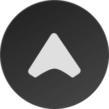

Present
- Principal Developer at Monks
Hello! This is Jeff,
an Experience Engineer building for the AI era.
Architecturing the intent and engineering the experience. AI at build time. Trust at runtime.
Toronto, ON

ARCPX Modular agentic platform for composing AI workflows with a DAG engine and persistent memory. Monksflow Led agent tooling and context-engineering systems to improve observability and creative pipelines.Software engineering is never about just translating natural language into code. It is about capturing, understanding, analyzing, and managing human problem and expectation.
Nothing is forever. We have to acknowledge that AI has brought some irreversible changes to the world, good and bad ones. Our title as a software engineer has to change, because our job has changed.
The agent problem nobody talks about — why serious workflows benefit from decomposing monolithic agents into small, inspectable DAG steps you can version, audit, and re-run independently.
A decoupled typeahead engine built on ternary search trees — O(log n) prefix search without HTTP round-trips, packaged as an npm module developers can run on the front-end or behind a cached service.
A local MCP server that makes a model decompose a problem into a graph of small reasoning steps, logs the path, and renders it so any step can be inspected and regenerated.